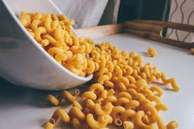

main

makaroner det nya steoridet?
studier visar att människor med högre grad konsumtion av makaroner
har enklare att bygga muskler. studier ifrån sveriges bästa instutitioner
har visat att makaronerna innehåller ett speciellt ämne som heter onloadedmetadata
steoredium, ämnet är protein och hormon rikt.